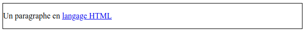
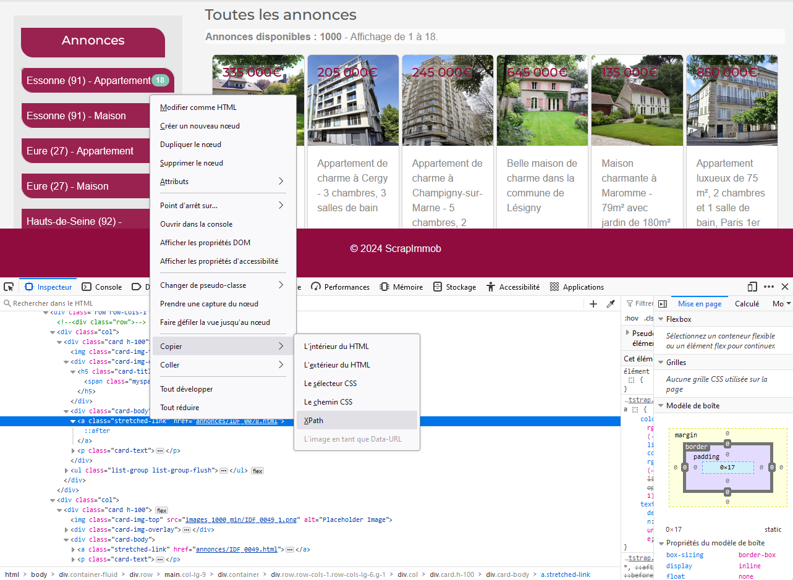
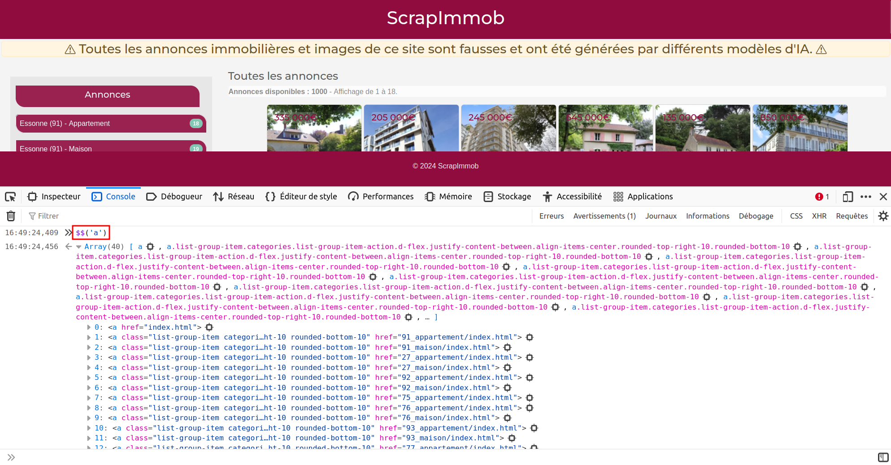
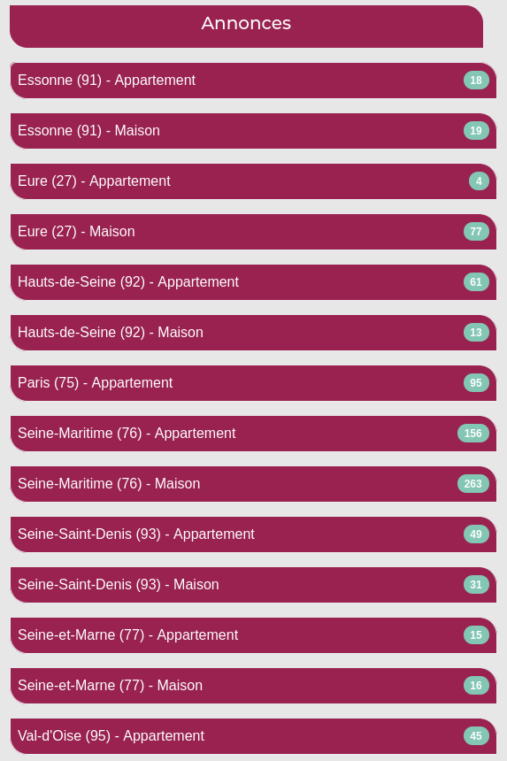
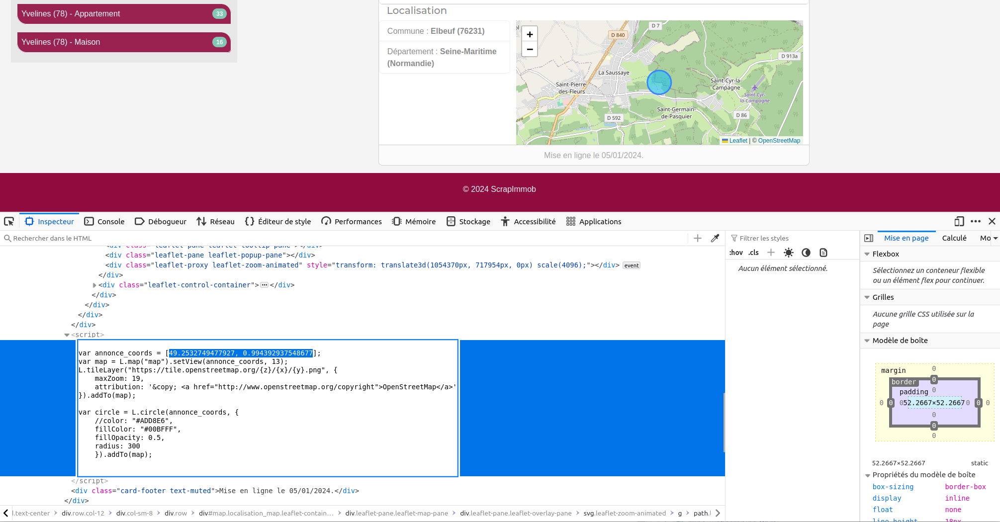
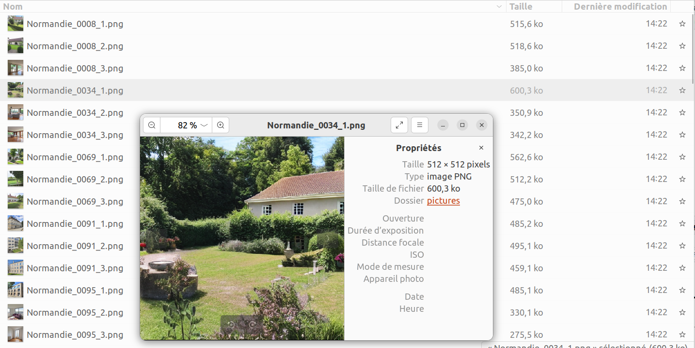

<!DOCTYPE html>
<html>
<head>
<!-- Métadonnées de la page -->
<title>Titre de la page</title>
</head>
<body>
<!-- Contenu de la page -->
</body>
</html> Premiers pas en web scraping
Introduction à la collecte automatique de données du web
Cet article peut être utilisé comme support pour une initiation aux bases de la collecte automatique de données du web avec R. De nombreux aspects et méthodes de web scraping qui ne sont pas abordés dans cet article sont présentés sur ce site web associé, plus complet et approfondi sur le web scraping avec R et Python.
Introduction
Le web scraping, ou extraction de données sur le web, est un ensemble de techniques qui consistent à extraire de manière automatisée des informations à partir de sites web. En d’autres termes, c’est comme si vous utilisiez un robot pour récupérer des données à partir de pages web, plutôt que de le faire manuellement.
En sciences humaines et sociales, le web scraping peut être utilisé pour collecter des données pertinentes sur des sites web, forums, blogs, des réseaux sociaux, ou autres sources en ligne. Cette méthode peut être particulièrement utile pour analyser des tendances, des opinions, des dynamiques, ou tout simplement pour constituer une base de données à partir de plusieurs sources internet. L’utilisation de R pour le web scraping permet d’automatiser ce processus et d’analyser les données extraites immédiatement de manière efficace.
Le web scraping permet d’extraire des informations spécifiques d’une page web en analysant sa structure HTML et en extrayant uniquement les éléments pertinents. Cette pratique demande ainsi quelques connaissances techniques en matière de web, de langage de balisage HTML et de langage CSS, qui permettent respectivement de structurer une page web et de définir l’apparence et la mise en forme des différents éléments du document.
Au-delà d’initier au web scraping avec R, cet article aborde dans un premier temps les connaissances indispensables à la mise en place d’une collecte de données automatisée.
Le web scraping regroupe différentes techniques plus ou moins complexes. Cet article, qui est une initiation à la pratique de la collecte automatique de données, présente le cas d’utilisation le plus simple (c’est-à-dire le scraping d’une page web statique et peu interactive). Pour aller plus loin et se former à des techniques plus avancées, vous pouvez consulter ce support de formation plus détaillé :
Objectifs et prérequis
Le site web ScrapImmob
Pour cette introduction à la collecte automatisée de données du web avec R, nous proposons une mise en pratique sur un site internet de démonstration créé pour l’occasion : ScrapImmob. Ce site compile 1000 annonces fictives de ventes immobilières de maisons et d’appartements.
L’intégralité des biens présentés, ainsi que les images associées ont été générés par différents modèles d’intelligence artificielle. Toutes les informations affichées sont donc complètement fictives. Toute ressemblance avec une annonce existante ou ayant existé serait purement fortuite et ne pourrait être que le fruit d’une pure coïncidence.
Les annonces de ventes de maisons ou d’appartements affichées sur le site ScrapImmob sont localisées dans dix départements français des régions Normandie et Île-de-France : l’Eure, la Seine-Maritime, l’Essonne, les Hauts-de-Seine, Paris, la Seine-Saint-Denis, la Seine-et-Marne, le Val d’Oise, le Val de Marne et les Yvelines.
Une exploration rapide du site nous permet d’observer que chaque annonce contient les informations suivantes :
- des photographies,
- un titre,
- une description,
- des caractéristiques techniques (surfaces, prix, nombre de pièces, etc.),
- Une localisation (commune et carte interactive).
Les objectifs de collecte
Avant de se lancer dans une collecte automatisée, il est primordial de bien définir ses objectifs et de déterminer précisément quelles informations on souhaite récupérer. L’exploration du code source du site (cf. partie 2.3) permet ensuite d’estimer le niveau de difficulté et de choisir une méthode de collecte optimale.
Pour cette démonstration, notre objectif est de récupérer la liste des biens mis en vente (maisons et appartements) en Seine-Maritime sur le site ScrapImmob, incluant l’ensemble des caractéristiques de description. La récupération des coordonnées géographiques affichées dans la carte interactive est également souhaitée.
Voici l’ensemble des caractéristiques que nous souhaitons récupérer :
- Titre
- Description
- Type de bien
- Nombre de chambres
- Nombre de salles de bain
- Surface habitable
- Surface de jardin
- Prix
- Commune
- Coordonnées géographiques
- Photographies (URL et téléchargement)
Pour répondre à cet objectif, nous allons alterner exploration, collecte et traitement de données :
Exploration du système de filtrage des biens (fonctionnement du système d’URL) (Partie 3.2.1)
Récupération de la liste de toutes les pages (URLs) que l’on souhaite scraper (Partie 3.2.2)
Exploration du code source du site afin de localiser les informations à récupérer (Partie 3.3.1)
Collecte de l’ensemble des caractéristiques de chaque bien à partir de la liste des URsL récupérées (Partie 3.3.2)
Nettoyage et traitement des données collectées (Partie 3.4)
Exploration du code source pour récupérer les coordonnées géographiques (carte intéractive) (Partie 3.5)
Collecte et traitement de coordonnées géographiques de chaque bien (Partie 3.5)
Téléchargement de l’ensemble des photos associées aux biens précédemment collectés (Partie 3.8)
Comprendre le code source
Le scraping d’un site web démarre toujours par l’exploration du code source du site ciblé. En effet, pour automatiser la collecte d’informations, il est nécessaire d’inspecter le code source afin de déterminer la localisation précise des différentes informations ciblées.
Extrait du code source de la page d’accueil du site web ScrapImmob :
Pour comprendre la structure d’une page web, plusieurs prérequis sont nécessaires. Il est indispensable d’avoir certaines connaissances spécifiques liées à la structure d’une page web et une compréhension des principes techniques sous-jacents. Vous devez ainsi acquérir une connaissance minimum du langage HTML (balises) et une familiarité avec le CSS (sélecteurs) pour identifier, cibler et extraire les éléments d’une page web. Pour cette raison, la partie suivante introduit les connaissances techniques indispensables à la mise en place de la collecte automatisée.
Bases techniques
Le langage HTML
Le langage HTML (HyperText Markup Language) est un dérivé du XML (eXtensible Markup Language). Le XML est un langage de balisage flexible qui permet de définir des règles spécifiques pour structurer et stocker des données. Il est utilisé dans une variété de domaines, notamment pour l’échange de données entre applications. Par exemple, voici un document XML simple représentant des informations sur un livre :
<Book>
<Title>Le Seigneur des Anneaux</Title>
<Author>J.R.R. Tolkien</Author>
<Genre>Fantasy</Genre>
<Year>1954</Year>
</Book>Le langage HTML, sous-langage du XML, partage de nombreuses caractéristiques avec ce langage, mais il est spécifiquement conçu pour structurer et organiser le contenu des pages web. Le HTML utilise une série de balises (des tags) pour définir la structure et le contenu d’une page web, ce qui permet aux navigateurs web de l’afficher correctement pour les utilisateurs.
Les balises
Il n’y a pas de nombre fixe de balises HTML, car de nouvelles balises peuvent être introduites avec les versions futures du langage HTML. Cependant, il existe un ensemble de balises HTML standard définies dans les spécifications du W3C (World Wide Web Consortium1). Pour obtenir la liste la plus à jour des balises HTML, vous pouvez consulter la documentation officielle du W3C.
Chaque balise est entourée des symboles < et > et peut contenir des attributs qui spécifient des propriétés supplémentaires pour l’élément. Si aucune balise n’est obligatoire dans une page HTML, il est de convention d’avoir la structure de base suivante :
<!DOCTYPE html>: En début du document, indique au navigateur qu’il s’agit d’une page HTML52.<html>: Englobe tout le contenu de la page HTML. Définit le début et la fin du document HTML.<head>: Contient les métadonnées de la page, des liens vers des fichiers annexes (CSS, javascript…), etc.<body>: Contient tout le contenu visible de la page, tel que le texte, les images, les liens, les tableaux, etc.
<title>: Définit le titre de la page qui apparaîtra dans la barre de titre du navigateur.
Dans la majorité des cas, on utilise une balise de fermeture pour indiquer la fin de l’élément. Une balise de fermeture présente le symbole / avant le nom de la balise :
<body>
<!-- Contenu de la page -->
</body> Le body peut englober toute une variété de balises prédéfinies pour structurer et ajouter différents types de contenu dans la page web. Voici quelques balises indispensables à connaître :
<h1>,<h2>, …,<h6>: titres de différents niveaux hiérarchiques,
<p>: paragraphe,
<a>: lien hypertexte,
<img>: image,
<ul>,<ol>,<li>: listes non ordonnées et ordonnées,
<table>,<tr>,<td>: tableau avec des lignes et des cellules,
<div>: section (type bloc),
<span>: section (type “inline”).
Exemple d’utilisation de la balise p (paragraphe) :
<body>
<p>Ceci est un paragraphe en langage HTML</p>
</body> Dans cet exemple, les balises <p> et </p> permettent de créer un paragraphe dont le contenu textuel est :
“Ceci est un paragraphe en langage HTML”.
Les différentes balises permettent ainsi de structurer, hiérarchiser et organiser le contenu d’une page web. Elles peuvent s’emboîter indéfiniment :
<body>
<div>
<p>Un paragraphe en <a href="https://fr.wikipedia.org/wiki/HTML5">langage HTML</a></p>
</div>
</body> Voici le rendu graphique du code HTML ci-dessus dans un navigateur web :

Les attributs
Ces balises hiérarchisées et potentiellement regroupées peuvent être renseignées d’attributs qui permettent de spécifier des informations supplémentaires et jouer sur leur mise en forme. Exemples d’attributs :
id: identifiant unique de la balise,
class: classe de la balise,
href: lien,
- etc.
Ces attributs sont à spécifier dans les balises ouvrantes :
<body>
<div id="debut_doc">
<h1 class="categorie">Tous les articles</h1>
</div>
<div id="Liste_ref">
<h2 class="article">Titre article</h2>
<p class="summary">Résumé article...</p>
<a href="https://www.article.org">Intégralité article</a>
<h2 class="article">Titre article bis</h2>
<p class="summary">Résumé article bis...</p>
<a href="https://www.article_bis.org">Intégralité article bis</a>
</div>
</body> L’organisation segmentée du contenu via les balises div ou span ainsi que les différents attributs spécifiés permettent la mise en forme et le paramétrage des éléments. Les attributs des balises peuvent être associés à une mise en forme (couleur, taille, position, etc.) à l’aide du langage CSS (cf. partie suivante). Mais il s’agit également d’éléments cruciaux pour la collecte automatisée de données sur le web, car ils permettent de cibler précisément des éléments.
Dans l’exemple de code source ci-dessus, il est ainsi possible de récupérer toutes les URLs (Uniform Resource Locator) des articles, en ciblant le contenu de tous les attributs href des balises <a> situés dans la <div> ayant pour identifiant “Liste_ref”.
Le langage CSS
Le CSS, ou Cascading Style Sheets (feuilles de style en cascade), est un langage de programmation utilisé pour décrire l’apparence et la mise en forme des documents HTML et XML. Il permet de contrôler l’apparence visuelle des différents éléments de pages web (taille, position, couleur, police, marges, etc.) via les sélecteurs CSS.
Le CSS peut être incorporé de différentes manières :
1. Directement dans les balises à l’aide de l’attribut style :
<h1 style ="font-size:40px;color:#f03b35;text-align:center;">Titre principal</h1> 2. Dans le document HTML, inclut dans une balise <style> adaptée à cet effet :
<html>
<style>
h1 {
color: #f03b35;
font-size: 40px;
text-align: center;
}
</style>
<body>
<h1>Titre principal</h1>
</body>
</html>3. Dans une feuille de style externe (fichier texte avec l’extension .css). Cette dernière méthode est à privilégier car la séparation du contenu et la mise en forme facilite la mise à jour des styles. Le lien vers la feuille de style CSS est à indiquer dans une balise <link> inclue dans la balise <head> qui contient les métadonnées du document :
<html>
<head>
<link rel="stylesheet" href="style.css">
</head>
<body>
<h1>Titre principal</h1>
<p>Un premier paragraphe introductif</p>
</body>
</html> body {
background-color: lightblue;
}
h1 {
color: #f03b35;
font-size: 40px;
text-align:center;
}
p {
font-style: italic;
font-size: 20px;
} Dans les trois cas présentés ci dessus, le rendu graphique dans un navigateur web sera le suivant :

Les sélecteurs CSS simples
Bien qu’une connaissance approfondie du CSS ne soit pas nécessaire pour le web scraping, il est important de connaître les sélecteurs CSS. Leur utilisation est précieuse pour cibler des données de manière détaillée et ainsi optimiser la collecte.
Comme une page HTML est un ensemble structuré de balises, ce qui revient à dire qu’une page HTML est un ensemble organisé de données, il est possible d’interroger la structure de cette page pour en cibler des éléments. En HTML, on utilise un langage d’interrogation propre, basé sur des sélecteurs, c’est-à-dire des expressions qui permettent de définir précisément un sous-ensemble des balises HTML (et CSS) d’une page web.
Si on peut utiliser ces sélecteurs pour extraire de l’information, leur usage le plus courant consiste à mettre en forme des éléments HTML, c’est-à-dire à appliquer un style spécifique à un sous-ensemble de balises.
1. Les sélecteurs d’éléments permettent de cibler tous les éléments d’un même type. Exemple pour les balises h2:
<h2>Titre de niveau 2</h2> h2 { font-size: 20px; }
2. Les sélecteurs d’identifiants permettent de cibler un élément par son identifiant (id), préfixé du symbole #.
<div id="example"> </div> #example { background-color: #f2f2f2; }
3. Les sélecteurs de classes permettent de cibler tous les éléments d’une même classe. On utilise le préfixe . pour indiquer qu’il s’agit d’un nom de class.
<p class="summary">Ceci est un résumé</p> .summary { font-family: Arial, sans-serif; }
4. Les sélecteurs d’attributs permettent de cibler des éléments ayant un attribut commun. Exemple : l’attribut href de la balise <a>, qui renseigne l’URL d’un lien cliquable.
<a href="https://www.example.org">Lien</a> a[href] { color: purple; } Il est possible de préciser sa cible en indiquant une valeur spécifique à l’attribut.
a[href="https://example.org"] { color: purple;}
Les sélecteurs complexes et combinateurs
Le CSS met également à disposition des sélecteurs complexes et combinateurs que l’on peut utiliser pour cibler des contenus de manière très précise. Quelques exemples :
A. Les sélecteurs descendants ciblent les éléments, descendants d’un autre élément.
<div id="liste_ref">
<p class="summary">Ceci est un résumé</p>
</div> #liste_ref p .summary { font-size: 12px; }
Cible tous les paragraphes de la classe
summary, positionnés dans l’élément ayant pour identifiant liste_ref.
B. Les sélecteurs de voisin direct ciblent les nœuds qui suivent immédiatement un élément.
<div id="liste_ref">
<h2>Titre article</h2>
<p class="summary">Ceci est un résumé</p>
<h2>Titre article</h2>
<p class="summary">Ceci est un résumé</p>
</div> #liste_ref + h2 { font-size: 14px; }
L’utilisation du symbole
+ permet de cibler uniquement la première balise h2 de la balise ayant pour identifiant liste_ref.
Exercice
Pour mieux comprendre l’utilisation et le fonctionnement du HTML et du CSS, vous pouvez vous exercer à la pratique de ces deux langages à partir de cet exemple simple mis à disposition en téléchargement :
Une fois téléchargé, décompressez le répertoire qui contient deux fichiers : page.html et style.CSS.
- Un fichier HTML peut être interprété (mis en page) par n’importe quel navigateur (Mozilla Firefox, Google Chrome, Microsoft Edge, ect.). Ouvrez le fichier page.html avec un navigateur. Aucune connexion internet n’est nécessaire.

- Ouvrez les deux fichiers (page.html et style.CSS) avec un éditeur de fichier texte (ex : bloc-note, RStudio, Notepad++, ect.).
<!DOCTYPE html>
<html>
<head>
<title>Ma Page HTML</title>
<meta charset="utf-8" />
<link rel="stylesheet" href="style.css">
</head>
<body>
<h1>Un titre de niveau 1</h1>
<p>Un premier petit paragraphe.</p>
<h2>Un titre de niveau 2</h2>
<p>Un autre paragraphe contenant un lien pour aller sur le site
<a href="https://elementr.netlify.app/">ElementR</a>.
</p>
</body>
</html> h1 {
color: #f03b35;
font-size: 40px;
text-align:center;
} Ajoutez et/ou modifiez du contenu (balise) dans le code source du fichier page.html. Enregistrez le fichier et ré-affichez (ou rafraîchissez avec la touche
F5) la page HTML dans le navigateur pour découvrir le rendu.Ajoutez et/ou modifiez du contenu dans le code source du fichier style.css. Enregistrez le fichier et ré-affichez la page HTML (ou rafraîchissez-la avec la touche
F5) dans le navigateur pour apprécier la nouvelle mise en page.
Explorer le code source
Maintenant que vous avez les bases des langages HTML et CSS, vous avez les capacités de consulter le code source du site ScrapImmob, comprendre sa structure et localiser les informations que vous souhaitez extraire.
Affichage brut
Il est très simple d’afficher le code source d’une page web. Réalisez un clic-droit sur la page ciblée, puis sélectionnez le menu “(Affichez le) code source de la page”. Le code source que le navigateur reçoit et met en forme est alors affiché dans un nouvel onglet. Cette fonctionnalité est également accessible avec le raccourci Ctrl + U.
Avec Google Chrome : 
Avec Mozilla Firefox : 
L’inspecteur de code
L’inspecteur de code, un outil proposé par l’ensemble des navigateurs, simplifie l’exploration du code source d’une page. En s’appuyant sur différentes fonctionnalités (survol, filtrage, recherche, etc.), l’inspecteur de code facilite l’identification des balises, des classes, des identifiants, des styles associés aux éléments et permet ainsi de procéder à une extraction ciblée de données. En utilisant l’inspecteur de code source, vous accédez à toutes les informations nécessaires pour concevoir un script de collecte automatisée.
Pour y accéder, cliquez-droit n’importe où sur la page web ouverte dans un navigateur, puis cliquez sur “Inspecter” :
Avec Google Chrome :

Avec Mozilla Firefox :

Une fois l’inspecteur ouvert, l’outil de sélection (entouré en rouge) donne la possibilité de naviguer dans le code source en survolant les différents éléments de la page, et vice versa.

Vous pouvez déplier le code source pour l’explorer en profondeur.
Sur la page d’accueil de ScrapImmob, les liens vers les pages d’annonces listées sur la page d’accueil semblent stockés dans l’attribut href des balises <a> de la classe stretched-link.

En réalisant un clic-droit sur un élément, vous pouvez accédez à la fonctionnalité “copier” qui vous permet de récupérer plusieurs choses :

Il est ainsi possible de récupérer aisément :
- l’intérieur du HTML : contenu de la balise sélectionnée. Par exemple, l’intérieur du HTML de
<div id="abc" class="foo"><strong>TEXTE</strong></div>est<strong>TEXTE</strong>. - l’exterieur du HTML : ensemble de la balise sélectionnée. Par exemple, l’extérieur du HTML de
<div id="abc" class="foo"><strong>TEXTE</strong></div>est<div id="abc" class="foo"><strong>TEXTE</strong></div>. - Le sélecteur CSS. Exemple pour le titre du site “ScrapImmob” :
header.col-12 > h1:nth-child(1) - Le chemin CSS. Exemple pour le titre du site “ScrapImmob” :
html body div.container-fluid div.row header.col-12.text-center.p-3 h1 - Le Xpath. Exemple pour le titre du site “ScrapImmob” :
/html/body/div/div[1]/header/h1
XPath est un acronyme qui signifie “XML Path Language”. Il s’agit d’un langage de requête utilisé pour naviguer et interroger des documents XML ou HTML. XPath est ainsi utilisé pour sélectionner des éléments spécifiques d’une page web.
Ces trois derniers éléments pourront vous être précieux pour automatiser votre collecte. Par exemple, le sélecteur CSS de la première balise <a> de la classe stretched-link est div.col:nth-child(1) > div:nth-child(1) > div:nth-child(3) > a:nth-child(1). Ce sélecteur permet de cibler la première balise <a> de cette classe.
L’inspecteur de code des navigateurs génère des sélecteurs qui sont toujours exacts, mais ne sont pas nécessairement les plus parcimonieux ou compréhensibles. Il existe en effet de très nombreux ensembles de sélecteurs différents qui peuvent cibler le(s) même(s) élément(s) d’une page web. En pratique, si le navigateur indique bien que le sélecteur correspondant à cette dernière requête est div.col:nth-child(1) > div:nth-child(1) > div:nth-child(3) > a:nth-child(1), on notera que la récupération du premier élément de a.stretched-link (par exemple en faisant $$('a.stretched-link')[0] dans la console, cf. infra) est plus lisible.
La console de l’inspecteur de code
Pour tester un sélecteur CSS, c’est-à-dire vérifier qu’il isole bien un sous-ensemble des éléments structurés d’une page web, on peut l’exécuter directement dans la Console de l’inspecteur de code.
Avec Mozilla Firefox : 
Dans la console, on peut tester un sélecteur CSS en utilisant la syntaxe spécifique suivante :
$$('sélecteur')
Par exemple, pour sélectionner tous les liens (balises <a>...</a>) de cette page web, on peut exécuter la requête $$('a') dans la console de l’inspecteur. Exemple avec Firefox :

Cela renvoie une liste d’objets HTML que l’on peut explorer interactivement (code dépliable), et permet ainsi de tester le bon fonctionnement d’une requête via sélecteurs CSS, avant de l’automatiser dans un script de scraping.
Chacun des éléments isolés peut être localisé dans l’inspecteur (clic sur l’icône  avec Firefox, et clic sur le nom de l’élément avec le navigateur Chrome).
avec Firefox, et clic sur le nom de l’élément avec le navigateur Chrome).
Exercice
Combien y-a-t-il de liens (balises
<a>...</a>) sur cette page web ?Combien y-a-t-il de liens (balises
<a>...</a>) de la classe.stretched-link? Vous pouvez utiliser la syntaxe suivante :$$('element.class')Combien y-a-t-il d’éléments en gras (balise
<strong>...</strong>) sur une page d’annonce ?Combien y-a-t-il de balises
<script>...</script>qui permettent d’intégrer ou de faire référence à un script javascript exécutable ? Dans quelle balise<script>sont stockées les coordonnées géographiques du marqueur affiché sur la carte interactive des pages d’annonces ?
Mise en pratique
Les packages de scraping
Comme pour toutes les opérations et manipulations de données, plusieurs solutions existent pour le web scraping avec R. Si plusieurs fonctions R-base3 peuvent être utilisées, il existe surtout deux packages de référence en matière de collecte automatisée :
rvest: développé par Hadley Wickham (Posit), ce package facilite le scraping en utilisant les sélecteurs CSS et XPath pour extraire les données formatées en HTML ou en XML. Ce package s’inspire de bibliothèques Python déjà existantes : Beautiful Soup et RoboBrowser.rvestfait partie de l’écosystèmetidyverse, les fonctions peuvent s’utiliser avec le(s) pipe(s). Ce package est simple d’utilisation mais également limité en matière de fonctionnalité. Il ne permet que depuis peu, et de manière réduite, de simuler les actions d’un utilisateur (clic, scroll, etc.). On l’utilisera essentiellement pour l’extraction de données de sites web statiques.Rselenium: ce package est ce que l’on appelle un binding de langage (“liaison”) qui permet d’utiliser, depuis R, les fonctionnalités de l’outilSelenium 2.0 WebDriver. Ce framework web permet d’automatiser les tests d’applications web en simulant des utilisateurs.Selenium 2.0 WebDriverpeut aussi être utilisé pour la collecte automatisée de données sur des sites web dynamiques, nécessitant une interaction utilisateur (exécution de code javascript généré par clic, survol, scroll, etc.). Il s’agit concrètement d’un outil qui simule la navigation sur un site web plutôt que d’un outil commervestqui en extrait simplement le contenu.
Le site web ScrapImmob est un site web statique. Il n’existe pas de base de données, toutes les informations affichées par le navigateur sont stockées dans le code source de la page. Ainsi, il n’est pas nécessaire de simuler le comportement d’un utilisateur pour accéder aux données ciblées. Dans ce cas, il est plus simple d’utiliser le package rvest.
Installation de rvest
Le package rvest permet de naviguer à travers la structure HTML des pages web, d’extraire du texte, des tableaux, des images et d’autres éléments, et de les convertir en données structurées directement exploitables dans R.
Commencez par installer le package, puis chargez la librairie.
install.packages("rvest")
library(rvest)
Fonctionnement de rvest
Commençons par explorer les principales fonctions du package rvest à partir d’un extrait du code source du site web ScrapImmob. Pour cela, nous pouvons utiliser la fonction minimal_html() qui permet de créer un contenu HTML (XML) requêtable à partir de code HTML fourni dans une chaîne de caractères.
# Extrait de code source HTML du site ScrapImmob
extrait_html <- "<div class='card-body'>
<a href='annonces/IDF_0078.html' class='stretched-link'></a>
<p class='card-text'>Maison charmante de 96 m² avec grand jardin à Châtenay-Malabry</p>
</div>"
# Interprétation du "texte" comme du code source HTML
basic_html <- minimal_html(extrait_html)
class(basic_html)[1] "xml_document" "xml_node" - Les fonctions
html_element()ouhtml_elements()permettent respectivement la récupération du 1er ou de tous les éléments d’un document HTML, en précisant un sélecteur CSS ou un Xpath. Par exemple,html_elements("p")appliqué au code source d’une page permet de récupérer tous les paragraphes :
# Récupérer toutes les balises <p> du document :
basic_html |> html_elements("p"){xml_nodeset (1)}
[1] <p class="card-text">Maison charmante de 96 m² avec grand jardin à Châten ...- La fonction
html_attr()permet l’extraction des valeurs d’attributs.
# Récupérer la ou les URL(s) indiquée(s) dans l'attribut href
basic_html |> html_elements("a") |> html_attr("href")[1] "annonces/IDF_0078.html"- Les fonctions
html_text()ouhtml_text2()permettent d’extraire uniquement le texte d’un élément.
# Récupérer le contenu textuel des balises <p>
basic_html |> html_elements("p") |> html_text2()[1] "Maison charmante de 96 m² avec grand jardin à Châtenay-Malabry"
Les fonctions du package
rvest sont conçues pour être utilisées en pipe. Elles fonctionnent aussi bien avec le pipe natif du R-base (|>), qu’avec celui du package magrittr (%>%), utilisé par le tidyverse
Le système d’URL
Filtrage des biens & ciblage d’URL

Sur la page d’accueil du site ScrapImmob, un ensemble de boutons situé à gauche permet de filtrer les biens par département et par type de biens. Lorsque l’on clique sur l’un de ces boutons, les biens affichés sur la page sont filtrés en fonction du choix réalisé. L’URL de la page est alors modifiée de la manière suivante :
URL principale :
https://analytics.huma-num.fr/Robin.Cura/ScrapImmob/index.html
URL du filtre “Essonne (91) - Appartement” :
https://analytics.huma-num.fr/Robin.Cura/ScrapImmob/91_appartement/index.html
URL du filtre “Val-d’Oise (95) - Maison” :
https://analytics.huma-num.fr/Robin.Cura/ScrapImmob/95_maison/index.html
Notre objectif étant de collecter uniquement des données sur les biens (maisons et appartements) de la Seine-Maritime, nous allons orienter notre collecte sur les deux URLs suivantes :
- https://analytics.huma-num.fr/Robin.Cura/ScrapImmob/76_maison/index.html
- https://analytics.huma-num.fr/Robin.Cura/ScrapImmob/76_appartement/index.html
Nous commençons par récupérer le code source de ces deux pages avec la fonction read_html(). Cette fonction effectue une requête HTTP, puis en analyse le code HTML récupéré à l’aide du package xml2.
url_appart <- "https://analytics.huma-num.fr/Robin.Cura/ScrapImmob/76_appartement/"
url_maison <- "https://analytics.huma-num.fr/Robin.Cura/ScrapImmob/76_maison/"
code_appart <- read_html(url_appart)
code_maison <- read_html(url_maison)# Affichage de l'objet code_appart
code_appart{html_document}
<html lang="en">
[1] <head>\n<meta http-equiv="Content-Type" content="text/html; charset=UTF-8 ...
[2] <body>\n <div class="container-fluid">\n <div class="row">\n ...
Localiser les URLs des pages d’annonces
À partir de ces deux pages et de leur code source, nous allons récupérer la liste des URLs de toutes les pages des annonces affichées. Cela nous permettra dans un second temps, de collecter l’ensemble des informations de description de chaque bien en vente.
En explorant le code source, on remarque que les URLs des pages d’annonces complètes sont stockées dans des balises <a> de la classe stretched-link :

Pour récupérer l’ensemble de ces URLs, nous devons collecter les valeurs (URL en chaîne de caractères) de l’attribut href dans toutes les balises <a> de la classe stretched-link :
code_appart |> html_elements("a.stretched-link") |> html_attr("href") [1] "../annonces/Normandie_0105.html" "../annonces/Normandie_0029.html"
[3] "../annonces/Normandie_0011.html" "../annonces/Normandie_0252.html"
[5] "../annonces/Normandie_0398.html" "../annonces/Normandie_0026.html"
[7] "../annonces/Normandie_0032.html" "../annonces/Normandie_0385.html"
[9] "../annonces/Normandie_0203.html" "../annonces/Normandie_0361.html"
[11] "../annonces/Normandie_0284.html" "../annonces/Normandie_0336.html"
[13] "../annonces/Normandie_0212.html" "../annonces/Normandie_0393.html"
[15] "../annonces/Normandie_0354.html" "../annonces/Normandie_0261.html"
[17] "../annonces/Normandie_0189.html" "../annonces/Normandie_0259.html"Nous pouvons faire la même chose pour les annonces de vente de maison en Seine-Maritime :
code_maison |> html_elements("a.stretched-link") |> html_attr("href") [1] "../annonces/Normandie_0105.html" "../annonces/Normandie_0029.html"
[3] "../annonces/Normandie_0011.html" "../annonces/Normandie_0252.html"
[5] "../annonces/Normandie_0398.html" "../annonces/Normandie_0026.html"
[7] "../annonces/Normandie_0032.html" "../annonces/Normandie_0385.html"
[9] "../annonces/Normandie_0203.html" "../annonces/Normandie_0361.html"
[11] "../annonces/Normandie_0284.html" "../annonces/Normandie_0336.html"
[13] "../annonces/Normandie_0212.html" "../annonces/Normandie_0393.html"
[15] "../annonces/Normandie_0354.html" "../annonces/Normandie_0261.html"
[17] "../annonces/Normandie_0189.html" "../annonces/Normandie_0259.html"Cela permet de récupérer les URLs des annonces affichées sur la première page. Pour collecter l’ensemble des biens ciblés, nous devons comprendre comment fonctionne le système d’URL qui permet d’afficher toutes les annonces de biens en vente en Seine-Maritime (cf. partie suivante).
Récupérer toutes les URLs
Dans la partie précédente, nous avons pu collecter les URLs des biens affichés sur les premières pages. Pour reproduire la collecte d’URLs sur l’ensemble des pages des appartements et des maisons de Seine-Maritime, il est nécessaire de connaître le nombre total de pages à afficher pour consulter tous les biens et de comprendre le système d’URLs utilisé par ScrapImmob.
Dans cette section, il y a 156 biens en vente, et chaque page en affiche jusqu’à 18. Il y a donc 9 pages des biens listés (156 / 18 = 8.7).

Dans cette section, il y a 263 biens en vente, et chaque page en affiche jusqu’à 18. Il y a donc 15 pages des biens listés (263 / 18 = 14.6).
Lorsque l’on observe le comportement de l’URL à chaque chargement d’une nouvelle page, il est facile de comprendre le système d’URLs utilisé par ScrapImmob :
Page 1 = https://analytics.huma-num.fr/Robin.Cura/ScrapImmob/76_appartement/index.html
Page 2 = https://analytics.huma-num.fr/Robin.Cura/ScrapImmob/76_appartement/page_2.html
Page 3 = https://analytics.huma-num.fr/Robin.Cura/ScrapImmob/76_appartement/page_3.html
Page 4 = https://analytics.huma-num.fr/Robin.Cura/ScrapImmob/76_appartement/page_4.html
Page 5 = https://analytics.huma-num.fr/Robin.Cura/ScrapImmob/76_appartement/page_5.html
…
Il est alors aisé de reconstituer la liste des URLs des pages ciblées de la manière suivante :
# Nombres de pages à scrapper
nbpage_appart <- 9
nbpage_maison <- 15
# Construction des URLs pour les biens de type "appartement" (76)
list_url_appart <- paste0(url_appart, "page_", 1:nbpage_appart,".html")
# Construction des URLs pour les biens de type "maison" (76)
list_url_maison <- paste0(url_maison, "page_", 1:nbpage_maison,".html")
# Concaténation des deux vecteurs d'URLs
list_url <- c(list_url_appart, list_url_maison)
# Modification des URLs des premières pages : page_1.html = index.html
list_url<- gsub(x = list_url, pattern = "page_1.html", replacement = "index.html")
# Affichage du vecteur de liens
head(list_url)[1] "https://analytics.huma-num.fr/Robin.Cura/ScrapImmob/76_appartement/index.html"
[2] "https://analytics.huma-num.fr/Robin.Cura/ScrapImmob/76_appartement/page_2.html"
[3] "https://analytics.huma-num.fr/Robin.Cura/ScrapImmob/76_appartement/page_3.html"
[4] "https://analytics.huma-num.fr/Robin.Cura/ScrapImmob/76_appartement/page_4.html"
[5] "https://analytics.huma-num.fr/Robin.Cura/ScrapImmob/76_appartement/page_5.html"
[6] "https://analytics.huma-num.fr/Robin.Cura/ScrapImmob/76_appartement/page_6.html"
Une autre solution aurait été de simuler le clic d’un utilisateur sur le bouton “page suivante”. Cela aurait permis de collecter des données sans avoir à lister les URLs des pages ciblées, mais cela aurait nécessité un script plus complexe alors que le système d’URLs s’avère extrêmement simple !
Collecter toutes les URLs
À partir de cette liste d’URLs, nous allons pouvoir collecter l’ensemble des liens qui renvoient vers des pages d’annonces complètes. Pour cela, nous créons la boucle suivante :
# Création d'un vecteur vide
links <- character()
# Boucle de récupération des URLs des pages d'annonces
for (i in 1:length(list_url)){
# Récupération du code source de la page i
page <- read_html(list_url[i])
# Récupération des liens dans les balises de la classe "stretched-link"
links_p <- page |> html_elements("a.stretched-link") |> html_attr("href")
# Concaténation des URLs récupérées
links <- c(links, links_p)
}Total du nombre de liens de page d’annonce récupéré :
length(links)[1] 419# Affichage des 6 premiers liens récupérés
head(links)[1] "../annonces/Normandie_0105.html" "../annonces/Normandie_0029.html"
[3] "../annonces/Normandie_0011.html" "../annonces/Normandie_0252.html"
[5] "../annonces/Normandie_0398.html" "../annonces/Normandie_0026.html"Les URLs récupérées sont relatives, c’est-à-dire qu’elles n’incluent que le chemin relatif des pages par rapport à la page où elles sont indiquées. Le chemin courant complet n’est pas indiqué. Nous pouvons le rajouter avec la fonction url_absolute() de la manière suivante.
links <- url_absolute(links, "https://analytics.huma-num.fr/Robin.Cura/ScrapImmob/a/b")
# Affichage des 6 premières URLs absolues reconstruites
head(links)[1] "https://analytics.huma-num.fr/Robin.Cura/ScrapImmob/annonces/Normandie_0105.html"
[2] "https://analytics.huma-num.fr/Robin.Cura/ScrapImmob/annonces/Normandie_0029.html"
[3] "https://analytics.huma-num.fr/Robin.Cura/ScrapImmob/annonces/Normandie_0011.html"
[4] "https://analytics.huma-num.fr/Robin.Cura/ScrapImmob/annonces/Normandie_0252.html"
[5] "https://analytics.huma-num.fr/Robin.Cura/ScrapImmob/annonces/Normandie_0398.html"
[6] "https://analytics.huma-num.fr/Robin.Cura/ScrapImmob/annonces/Normandie_0026.html"
Collecte principale
Scraping d’une page d’annonce
Notre liste de pages web à scraper est prête. Nous pouvons maintenant explorer les pages de chaque annonce pour comprendre comment sont structurées les données en HTML afin de les extraire automatiquement. Après une exploration avec l’inspecteur de code, nous observons que les éléments ciblés sont stockés dans les balises suivantes :
- Titre court : balise
<h6>de classedisplay-6 - Titre long : balise
<h5>de classecard-title - Description : balise
<p>de classecard-text - Photos (3) : balises
<img>de classeimg-fluid
Les autres informations sont stockées dans une balise <ul> (ou <div>) de classe list-group :
- Type de bien : balise
<li>de classelist-group-item- élément 1
- Nombre de chambres : balise
<li>de classelist-group-item- élément 2
- Nombre de salles de bain : balise
<li>de classelist-group-item- élément 3
- Surface habitable : balise
<li>de classelist-group-item- élément 4
- Surface jardin : balise
<li>de classelist-group-item- Cet élément est facultatif !
- Prix : balise
<li>de classelist-group-item- élément 5 ou 6
- Commune : balise
<li>de classelist-group-item- élément 6 ou 7 - Département : balise
<li>de classelist-group-item- élément 7 ou 8
Les informations que l’on souhaite récupérer dans les balises
<li> sont affichées en gras (balise <strong>). Cette caractéristique s’avère très précieuse pour optimiser la collecte.
Dans un premier temps, nous essayons d’extraire ces informations pour la première page d’annonce :
# Lecture du code source de la page 1
code_annonce_1 <- read_html(links[1])Nous pouvons essayer d’extraire chaque élément séparément :
# Titre court
code_annonce_1 |> html_element("h6.display-6") |> html_text2()[1] "Appartement charmeux de 57m² à Elbeuf - Région Normandie à vendre à 90000€"# Titre long
code_annonce_1 |> html_element("h5.card-title") |> html_text2()[1] "Appartement de rêve de 57m² avec 3 chambres et 1 salle de bains à Elbeuf, région Normandie. À vendre à 90000€."# Description
code_annonce_1 |> html_element("p.card-text") |> html_text2()[1] "Cet appartement de 57m², situé dans la magnifique commune d'Elbeuf, en région Normandie, est l'opportunité idéale pour vous. Composé de 3 chambres et 1 salle de bain, cet appartement offre tout espace nécessaire pour vivre confortablement et agréablement. Sa situation privilégiée permet de profiter des attractions touristiques et culturelles de la région Normandie, tout en étant proche des transports en commun et des services. Avec un prix abordable de 90000€, cet appartement ne fait que s'offrir à vous. Ne ratez pas cette occasion unique et contactez-nous pour plus d'informations ou pour visiter le bien."# Photos (liens relatifs)
code_annonce_1 |> html_elements("img.img-fluid") |> html_attr("src")[1] "../images_1000/Normandie_0105_1.png" "../images_1000/Normandie_0105_2.png"
[3] "../images_1000/Normandie_0105_3.png"# Photos 1
code_annonce_1 |> html_element("a.col-sm-3:nth-child(1) > img") |> html_attr("src")[1] "../images_1000/Normandie_0105_1.png"# Photos 2
code_annonce_1 |> html_element("a.col-sm-3:nth-child(2) > img") |> html_attr("src")[1] "../images_1000/Normandie_0105_2.png"# Photos 3
code_annonce_1 |> html_element("a.col-sm-3:nth-child(3) > img") |> html_attr("src")[1] "../images_1000/Normandie_0105_3.png"# Type, nombre de chambres, de salles de bain, surfaces, prix, commune et département
code_annonce_1 |> html_elements("li.list-group-item > strong") |> html_text2()[1] "Appartement" "3"
[3] "1" "57 m²"
[5] "90 000€" "Elbeuf (76231)"
[7] "Seine-Maritime (Normandie)"
La récupération des coordonnées du marqueur affiché dans la carte interactive est légèrement plus complexe. Leur collecte automatisée est expliquée dans la partie 3.5.
Construction d’un tableau de collecte
Nous pouvons démarrer la collecte automatisée des informations sur l’ensemble des page ciblées. Nous commençons par créer un tableau contenant les URLs des pages ciblées dans la première colonne, puis plusieurs colonnes vides qui nous permettront de stocker l’ensemble des données collectées.
scrapimmob <- data.frame(URL = as.character(links),
T_court = NA,
T_long = NA,
Description = NA,
Photo_1 = NA,
Photo_2 = NA,
Photo_3 = NA,
Type = NA,
nb_ch = NA,
nb_sdb = NA,
surf_hab = NA,
surf_jar = NA,
prix = NA,
com = NA,
dep = NA)Le data.frame scrapimmob prêt à stocker les données collectées :
Scraping de toutes les pages
Nous pouvons maintenant construire une boucle qui collecte toutes les données ciblées et complète le tableau précédemment créé.
for (i in 1:nrow(scrapimmob)){
# Récupération du code source de chaque page
code_annonce <- read_html(scrapimmob$URL[i])
# Récupération Titre court
scrapimmob$T_court[i] <- code_annonce |> html_element("h6.display-6") |>
html_text2()
# Récupération Titre long
scrapimmob$T_long[i] <- code_annonce |> html_element("h5.card-title") |>
html_text2()
# Récupération Description
scrapimmob$Description[i] <- code_annonce |> html_element("p.card-text") |>
html_text2()
# Récupération Photo 1 (lien relatif)
scrapimmob$Photo_1[i] <- code_annonce |>
html_element("a.col-sm-3:nth-child(1) > img") |>
html_attr("src")
# Récupération Photo 2
scrapimmob$Photo_2[i] <- code_annonce |>
html_element("a.col-sm-3:nth-child(2) > img") |>
html_attr("src")
# Récupération Photo 3
scrapimmob$Photo_3[i] <- code_annonce |>
html_element("a.col-sm-3:nth-child(3) > img") |>
html_attr("src")
# Récupération Type, nombre de chambres,
# de salles de bain, surface, prix, commune et département
infos <- code_annonce |>
html_elements("li.list-group-item > strong") |>
html_text2()
scrapimmob$Type[i] <- infos[1]
scrapimmob$nb_ch[i] <- infos[2]
scrapimmob$nb_sdb[i] <- infos[3]
scrapimmob$surf_hab[i] <- infos[4]
if (length(infos) == 7){
scrapimmob$surf_jar[i] <- NA
scrapimmob$prix[i] <- infos[5]
scrapimmob$com[i] <- infos[6]
scrapimmob$dep[i] <- infos[7]
} else {
scrapimmob$surf_jar[i] <- infos[5]
scrapimmob$prix[i] <- infos[6]
scrapimmob$com[i] <- infos[7]
scrapimmob$dep[i] <- infos[8]
}
# print(paste0("Page ",i))
}
Dans la liste à puce (balise
<li> de la classe list-group-item) se trouvent plusieurs informations sur les biens. Cela permet de collecter plusieurs informations d’un coup. Cependant, certaines informations ne sont pas toujours renseignées. C’est le cas de “la surface de jardin”. Pour cette raison, nous utilisons un test if qui permet d’adapter la collecte en fonction du nombre d’éléments récupérés.
Cette boucle permet de compléter le data.frame scrapimmob :
Nettoyage des données
En web scraping, le plus compliqué n’est pas forcément la collecte des données. Un prétraitement des données collectées est souvent nécessaire pour obtenir une base de données propre et optimisée.
Dans notre démonstration, certaines des informations collectées ont besoin d’être nettoyées. C’est par exemple le cas de la variable prix, qui affiche l’unité monétaire (€), ou le cas de la variable com qui contient le nom de la commune et son code INSEE. Nous procédons donc à des traitements pour nettoyer les informations collectées.
- Suppression des unités de mesure pour les prix et les surfaces collectés :
# Suppression du symbol " m²"
scrapimmob$surf_hab <- gsub(x = scrapimmob$surf_hab, pattern = " m²", replacement = "")
scrapimmob$surf_jar <- gsub(x = scrapimmob$surf_jar, pattern = " m²", replacement = "")
# Suppression du symbole "€" et des espaces
scrapimmob$prix <- gsub(x = scrapimmob$prix, pattern = "€| ", replacement = "")- Conversion des nombres stockés en
stringen formatnumeric.
# Vecteur des noms de colonnes à convertir
col <- c("nb_ch", "nb_sdb", "surf_hab", "surf_jar", "prix")
# Conversion en numeric des colonnes ciblées
scrapimmob[col] <- as.data.frame(lapply(scrapimmob[col], as.numeric))- Ventilation de la variable
comen deux colonnes :com_nameetcom_insee.
# Séparation de la valeur de la variable "com" à partir du symbole "("
Name_and_code <- unlist(strsplit(scrapimmob$com, split = " \\(" ))
# Transformation du vecteur récupéré en matrice, puis insertion dans le data.frame
scrapimmob[ c("com_name","com_insee")] <- matrix(Name_and_code, ncol = 2, byrow = TRUE)
# Suppression de la parenthèse restante dans le nouveau champ "com_insee"
scrapimmob$com_insee <- gsub(x= scrapimmob$com_insee, pattern = ")", replacement = "")- Même opération sur la variable
dep, ventilée en deux colonnes :dep_nameetreg_name.
# Séparation de la valeur de la variable "dep" à partir du symbole "("
dep_and_reg <- unlist(strsplit(scrapimmob$dep, split = " \\(" ))
# Transformation du vecteur en matrice + insertion dans le data.frame
scrapimmob[ c("dep_name","reg_name")] <- matrix(dep_and_reg, ncol = 2, byrow = TRUE)
# Suppression de la parenthèse restante dans le nouveau champ "com_insee"
scrapimmob$reg_name <- gsub(x= scrapimmob$reg_name, pattern = ")", replacement = "")Résultats des traitements réalisés :
Collecte de coordonnées
La collecte des coordonnées géographiques de la localisation des biens en vente indiquées sur la carte interactive est un peu plus difficile. Les coordonnées sont stockées dans une balise <script> dans le code source des pages :

Extraction des coordonnées (x, y) pour une page d’annonce donnée :
# Récupération du code source d'une page d'annonce
page <- read_html(scrapimmob$URL[1])
# Récupération des balises de type script
code_page <- page |> html_elements('script') |> html_text2()
# Affichage du code source récupéré
code_page[1] ""
[2] "var annonce_coords = [49.2532749477927, 0.994392937548677]; var map = L.map(\"map\").setView(annonce_coords, 13); L.tileLayer(\"https://tile.openstreetmap.org/{z}/{x}/{y}.png\", { maxZoom: 19, attribution: '© <a href=\"http://www.openstreetmap.org/copyright\">OpenStreetMap</a>' }).addTo(map); var circle = L.circle(annonce_coords, { //color: \"#ADD8E6\", fillColor: \"#00BFFF\", fillOpacity: 0.5, radius: 300 }).addTo(map);"
[3] ""
[4] "" Les coordonnées sont stockées dans la deuxième balise <script>, au sein d’une chaîne de caractère qui englobe beaucoup d’informations. Il est donc nécessaire de réaliser quelques traitements afin d’extraire uniquement les coordonnées. Nous commençons par ne garder que le code source de la deuxième balise <script>.
# Sélection du 2e élément (balise script) qui contient les coordonées
code_page_coord <- code_page[2]Puis la fonction strcapture() nous permet aussi ensuite extraire les coordonnées à l’aide d’une expression régulière4 qui permet de ne garder que les caractères situés entre crochets [].
Pour isoler les caractères situés entre crochets dans la balise script, on utilise l’expression régulière “\\[(.*?)\\]”, qui peut se décomposer ainsi :
\\[: recherche d’un crochet ouvrant (avec utilisation de ‘\\’ pour indiquer qu’il s’agit bien du caractère, et non du rôle syntaxique “crochet”);
(.*?): extraction (parenthèses) de ce qui correspond au motif.*?, c’est-à-dire n’importe quel caractère (.), dans n’importe quelle quantité positive (*) ou nulle (?);
\\]: …jusqu’au crochet fermant.
coords <- strcapture(x = code_page_coord,
pattern = "\\[(.*?)\\]",
proto = data.frame(coordinates = character(0)))
# Les coordonnées du marqueur affiché sur la carte sont récupérées
coords coordinates
1 49.2532749477927, 0.994392937548677À l’aide de la fonction strsplit(), on découpe cette chaïne de caractères là où l’on détecte une virgule suivie d’un espace. Cela génère une liste de deux éléments que l’on peut ensuite dé-lister (fonction unlist()) pour obtenir un vecteur textuel contenant les deux coordonnées.
# Découpage de la chaîne de caractère
unlist(strsplit(coords$coordinates, split = ", " ))[1] "49.2532749477927" "0.994392937548677"Nous pouvons alors construire une boucle pour répéter cette opération pour toutes les annonces et collecter toutes les coordonnées d’un seul coup.
# Création de deux colonnes pour stocker les coordonnées
scrapimmob$Lat <- ""
scrapimmob$Long <- ""
# Création de deux colonnes pour stocker les coordonnées
for (i in 1:nrow(scrapimmob)){
# Lecture du code source
page <- read_html(scrapimmob$URL[i])
# Récupération du contenu des balises script
code_page <- page |> html_elements('script') |> html_text2()
# Extraction des cordonnées
coords <- strcapture(x = code_page[2],
pattern = "\\[(.*?)\\]",
proto = data.frame(coordinates = character(0)))
# Ajout des coordonées dans le data.frame scrapimmo
scrapimmob[ c("Lat","Long")][i,] <- unlist(strsplit(coords$coordinates, split = ", " ))
}
# Conversion des coordonnées récupérées en format numeric
scrapimmob$Lat <- as.numeric(scrapimmob$Lat)
scrapimmob$Long <- as.numeric(scrapimmob$Long)Les colonnes “Lat” et “Long” sont désormais renseignées pour chaque bien en vente :
Base de données finale
Notre base de données collectée liste les 419 biens à vendre (maisons et appartements) en Seine-Maritime, caractérisés par plusieurs variables :
- URL : URL de la page d’annonce du bien en vente (string)
- T_court : Titre court de l’annonce (string)
- T_long : Titre long de l’annonce (string)
- Description : Description complète de l’annonce (string)
- Photo_1 : URL de la photo 1 (string)
- Photo_2 : URL de la photo 2 (string)
- Photo_3 : URL de la photo 3 (string)
- Type : Type de bien (maison ou appartement) (string)
- nb_ch : Nombre de chambres (numeric)
- nb_sdb : Nombre de salles de bain (numeric)
- surf_hab : Surface habitable (en m²) (numeric)
- surf_jar : Surface de jardin (en m²) (numeric)
- prix : Prix (en €) (numeric)
- com : Nom et code INSEE de la commune concernée (string)
- dep : Département et région de la commune concernée (string)
- com_name : Libellé de la commune (string)
- com_insee : Code INSEE de la commune (string)
- dep_name : Département d’appartenance de la commune (string)
- reg_name : Région d’appartenance de la commune (string)
- Lat : Latitude - coordonnée géographique (numeric)
- Long : Longitude - coordonnée géographique (numeric)
Export des données
Export de la base en tableau
La fonction native write.csv() permet d’exporter le data.frame scrapimmob qui contient l’ensemble des données collectées.
write.csv(x = scrapimmob, file = "data/BD_ScrapImmob.csv", row.names = FALSE)Export de couche géographique
Le package sf pour la manipulation de données géographiques vectorielles permet, avec sa fonction st_as_sf, de convertir le data.frame scrapimmob en couche géographique ponctuelle (objet sf), à partir des latitudes et des longitudes stockées en colonne.
library(sf)
# Transformation du tableau en objet sf
scrapimmob_sf <- st_as_sf(scrapimmob,
coords = c("Long", "Lat"),
crs = 'EPSG:4326')
# Affichage graphique de la couche géographique
plot(scrapimmob_sf["prix"])
Notre base de données est désormais une couche géographique vectorielle (objet sf). Nous pouvons l’exporter dans le format de fichier de notre choix. Par exemple, en format geopackage (.gpkg) :
st_write(obj = scrapimmob_sf,
dsn = "data/BD_ScrapImmob.gpkg",
layer = "Seine_Maritime",
delete_layer = TRUE)Deleting layer `Seine_Maritime' using driver `GPKG'
Writing layer `Seine_Maritime' to data source
`data/BD_ScrapImmob.gpkg' using driver `GPKG'
Writing 419 features with 19 fields and geometry type Point.
Téléchargement des photos
Pour chaque annonce, nous avons collecté les liens vers les photos des biens mis en vente affichées sur le site web. À partir de ces liens stockés dans les colonnes Photo_1, Photo_2, et Photo_3, nous pouvons télécharger l’ensemble de ces images de la manière suivante.
- Création d’un nouveau répertoire pour y stocker l’ensemble des images collectés.
dir.create("data/pictures")- Construction d’un vecteur contenant toutes les URLs absolues (cf. partie 3.2.4) vers les photos.
# Reconstruction des URLs absolues
photo_1 <- url_absolute(scrapimmob$Photo_1,
"https://analytics.huma-num.fr/Robin.Cura/ScrapImmob/a/b")
photo_2 <- url_absolute(scrapimmob$Photo_2,
"https://analytics.huma-num.fr/Robin.Cura/ScrapImmob/a/b")
photo_3 <- url_absolute(scrapimmob$Photo_3,
"https://analytics.huma-num.fr/Robin.Cura/ScrapImmob/a/b")
links_photos <- c(photo_1, photo_2, photo_3)- En utilisant la fonction
download.file(), nous pouvons construire une boucle pour enregistrer toutes les photos dans le nouveau répertoire “pictures”.
for (i in 1:length(links_photos)){
# Récupération du nom de fichier à partir du lien
name_file <- sub(".*/", "", links_photos[i])
# Téléchargement et enregistrement de la photo
download.file(url = links_photos[i], destfile = paste0("data/pictures/", name_file))
}Toutes les photos sont récupérées :

Exploration des données
Graphique ggplot2
Le package ggplot2 nous permet de réaliser toutes sortes de représentations graphiques.
library(ggplot2)Graphique univarié
Graphique en barre représentant le nombre de biens en vente par type :
ggplot(scrapimmob) +
aes(x = Type) +
geom_bar(fill = "#4682B4") +
labs(y = "Nombre de biens",
title = "Répartition du nombre de biens, par type") +
coord_flip() +
theme_gray() +
theme(plot.title = element_text(size = 12L,
face = "bold"))
Graphique en barre représentant le nombre de biens en vente par commune normande :
ggplot(scrapimmob) +
aes(x = com_name) +
geom_bar(fill = "#4682B4") +
labs(y = "Nombre de biens en vente",
title = "Répartition du nombre de biens par commune") +
ylab("") +
coord_flip() +
theme_gray() +
theme(plot.title = element_text(size = 11L, face = "bold"),
axis.text=element_text(size=6.5))
Graphique bivarié
Distribution des surfaces habitables par types de biens :
ggplot(scrapimmob) +
aes(x = Type, y = surf_hab, color=Type) +
geom_boxplot() +
geom_jitter() +
labs(y = "Surface en m2",
title = "Les surfaces habitables selon le type de bien") +
theme_gray() +
theme(plot.title = element_text(size = 14L,
face = "bold"))
Distribution des surfaces habitables en fonction du prix de mise en vente :
# changer le type, la couleur et la taille
ggplot(scrapimmob) +
aes(x = prix, y = surf_hab, color = Type) +
geom_point()
Distribution des prix médians des maisons, par commune :
# Paramétrage de l'affichage des chiffre dans le graphique
options(scipen = 999)
# Sélection des maisons
scrapimmobmaison <- scrapimmob[scrapimmob$Type == "Maison",]
# Regroupement par commune - calcul prix médian
table <- aggregate(
x = scrapimmobmaison$prix,
by = list(scrapimmobmaison$com_name),
FUN=median
)
# Graphique
ggplot(data=table) +
aes(x = reorder(Group.1, -x), y = x) +
geom_col(fill = "#4682B4", colour = "white", linewidth = 0.05) +
coord_flip() +
labs(
title = "Le prix des maisons en vente par commune",
x = "Prix médian",
y = "") +
theme_gray() +
theme(plot.title = element_text(size = 12L, face = "bold"),
axis.text=element_text(size=6.5))
Nuage de mots
Les packages tm et wordcloud permettent de construire rapidement un nuage de mots.
library(tm)
library(wordcloud)Nous commençons par créer un objet list de type corpus (fonctions Corpus() et VectorSource() du package tm), à partir de la variable Description.
# Création du corpus
corpus <- Corpus(VectorSource(scrapimmob$Description))La fonction tm_map permet ensuite de nettoyer notre corpus textuel. Après avoir converti tout le texte en minuscule, nous supprimons les stopwords, la ponctuation et les chiffres.
# Conversion du texte en minuscule
corpus <- tm_map(corpus, content_transformer(tolower))
# Gestion de l'encodage du texte
corpus <- tm_map(corpus, content_transformer(function(x){
iconv(enc2utf8(x), sub = "byte")}
))
# Supression de stopwords
corpus <- tm_map(corpus, removeWords, stopwords("french"))
# Supression de la ponctuation
corpus <- tm_map(corpus, removePunctuation)
# Supression des chiffres
corpus <- tm_map(corpus, removeNumbers)
# Fonction de nettoyage personnalisée pour supprimer les motifs spécifiques
enlever_symbols <- content_transformer(function(x, pattern) gsub(pattern, "", x))
# Supression des symboles '€' et 'm²'
corpus <- tm_map(corpus, enlever_symbols, "€")
corpus <- tm_map(corpus, enlever_symbols, "m²")La fonction wordcloud permet ensuite de construire un nuage de mots.
wordcloud(corpus,
scale = c(2.5,0.5),
max.words = 50,
min.freq = 2,
random.order = FALSE,
colors = rev(terrain.colors(8)))
Cartographie
Carte interactive
Le package leaflet (binding de la librairie javascript du même nom) nous permet de construire de cartes interactives, et nous allons ici mobiliser la variable scrapimmob_sf qui correspond à la conversion en objet spatial vectoriel (sf) de la base de données des biens mis en vente.
library(leaflet)La fonction leaflet() nous permet de cartographier les biens mis en vente, colorés selon le type.
# Transformation des liens vers la photo 1 (lien relatifs -> absolus)
scrapimmob_sf$Photo_1 <- url_absolute(
scrapimmob_sf$Photo_1,
"https://analytics.huma-num.fr/Robin.Cura/ScrapImmob/a/b"
)
# Carte intéractive
leaflet(scrapimmob_sf) |>
# Ajout d'un fond de carte
addTiles() |>
# Ajourt des marqueurs
addCircleMarkers(
# Construction de pop-up
popup = ~paste("<strong>", T_court, "</strong>",
"<br><img src='", Photo_1 ,"' style='width:200px;height:200px;'>",
"<br><strong>Type :</strong>", Type,
"<br><strong>Surface habitable :</strong>", surf_hab,"m²",
"<br><strong>Nombre de chambres :</strong>", nb_ch, "</strong>",
"<br><strong>Nombre de salles de bains :</strong>", nb_sdb, "</strong>",
"<br><strong>Prix :</strong>", prix, "€"),
label = ~T_court,
radius = 2,
color = ~ifelse(Type == "Appartement", "#0C3762", "#F0AA0C"),
fillOpacity = 0.8)
Conclusion
Généralisation de l’exemple
Le site web exemple utilisé dans cet article est certes entièrement fictif, généré par un savant mélange de données data-driven et d’appel à des outils d’IA (Large Language Model pour les descriptions des annonces, Text-to-Image Model pour les “photos”), mais n’en reste pas moins complètement réaliste. La plupart des sites d’annonces, immobilières ou généralistes, comme Leboncoin, adoptent en effet une structure similaire, où des pages de catalogages d’annonces, correspondant à des filtres sur la base de données globale, permettent d’accéder à des vignettes des annonces individuelles, que l’on peut ensuite parcourir individuellement.
À ce titre, la méthode didactique de web scraping présentée dans ce document peut tout à fait être répliquée pour un ensemble assez large de sites.
Éthique du scraping
La création d’un site web exemple (ScrapImmob) permet certes une maîtrise totale du contenu, mais vise surtout à ne pas lancer de processus de scraping sur un site pour lequel nous n’aurions pas les droits. Le web scraping constitue ainsi une procédure assez agressive et un coût certain pour un site, car une multitude de requête sont envoyées en peu de temps.
L’extraction par web scraping de l’ensemble du contenu d’un site peut être condamné, comme dans l’exemple du site Leboncoin sus-cité qui avait obtenu réparation légale après avoir été scrapé de manière systématique par un concurrent.
Quelques bonnes pratiques
Dans un but de recherche, le web scraping est le plus souvent légal, mais cela n’empêche pas qu’il s’agit d’un procédé agressif dont il vaut mieux autant que possible limiter l’impact, au moyen de quelques bonnes pratiques.
Avant de se lancer
Il est indispensable de mener des recherches approfondies pour voir si les données que l’on cherche à collecter ne sont pas déjà disponibles, sous une forme ou une autre, de manière publique ou non. Cela peut prendre la forme de fichiers complets disponibles en open-data, de “dumps” de données mis à disposition par les plateformes (challenges Kaggle, datasets HuggingFace, etc.), ou encore d’interfaces dédiées à l’extraction des données mises à disposition par les sites (les API).
Dans le cas où les données ne semblent pas disponibles, n’hésitez pas à contacter et demander directement les données au producteur.
Scraper avec parcimonie
Si la scraping est le seul moyen d’accés aux données ciblées, vous pouvez vous lancer. Néanmoins, il est important de respecter un principe de parcimonie : chaque requête envoyée à un site web (fonction read_html()) simule ainsi la requête d’un utilisateur désireux d’accéder au site, et en les démultipliant, on peut engendrer un trafic important vers le site, ce qui a des répercussions financières voire matérielles pour lui. Le code présenté dans cet article émet plus de 2 000 requêtes vers notre site exemple, en téléchargeant plus de 500 Mo de données (majoritairement les photos). C’est de plusieurs ordres de grandeur supérieur au comportement d’un utilisateur “réel” du site, et cela pourrait tout à fait entraîner des erreurs sur le serveur physique qui héberge ce site, d’autant plus si une vingtaine de personnes exécute ces mêmes requêtes simultanément.
Avant de se lancer dans le web scraping, il est donc important de réfléchir aux informations dont on a réellement besoin et à la manière de minimiser le nombre de requêtes effectuées.
Pour aller plus loin
Si l’exemple développé dans cet article est thématiquement plausible, la plupart des sites actuels reposent sur des bases technologiques bien plus complexes qu’un simple enchaînement de pages HTML (site “statique”), en générant à la volée le contenu affiché par le navigateur (sites “dynamiques”).
Chaque technologie sous-jacente à un site implique des choix techniques et des logiques de web scraping très différents, et on pourrait presque dire que le web scraping de chaque site demande de développer un processus unique.
Pour vous aider à mettre en place des processus de web scraping plus complexes, nous vous renvoyons vers un site web bien plus complet associée à cette publication : https://webscraping.gitpages.huma-num.fr/website/.
Annexes
Info session
| setting | value |
|---|---|
| version | R version 4.4.1 (2024-06-14) |
| os | Ubuntu 22.04.5 LTS |
| system | x86_64, linux-gnu |
| ui | X11 |
| language | (EN) |
| collate | fr_FR.UTF-8 |
| ctype | fr_FR.UTF-8 |
| tz | Europe/Paris |
| date | 2024-09-17 |
| pandoc | 2.9.2.1 @ /usr/bin/ (via rmarkdown) |
| package | ondiskversion | source |
|---|---|---|
| DT | 0.33 | CRAN (R 4.4.0) |
| ggplot2 | 3.5.1 | CRAN (R 4.4.0) |
| leaflet | 2.2.2 | CRAN (R 4.4.0) |
| NLP | 0.2.1 | CRAN (R 4.4.0) |
| RColorBrewer | 1.1.3 | CRAN (R 4.4.0) |
| rvest | 1.0.4 | CRAN (R 4.4.1) |
| sf | 1.0.16 | CRAN (R 4.4.0) |
| tm | 0.7.13 | CRAN (R 4.4.0) |
| wordcloud | 2.6 | CRAN (R 4.4.0) |
Citation
Christophe L, Pécout H, Cura R, Cebeillac A, Rey-Coyrehourcq S (2024)., “Premiers pas en web scraping.” doi:10.48645/xxxxxx, https://doi.org/10.48645/xxxxxx,, https://rzine.fr/publication_rzine/xxxxxxx/.
BibTex :
@Misc{,
title = {Premiers pas en web scraping},
subtitle = {Introduction à la collecte automatique de données du web},
author = {Léa Christophe and Hugues Pécout and Robin Cura and Alexandre Cebeillac and Sébastien Rey-Coyrehourcq},
doi = {10.48645/xxxxxx},
url = {https://rzine.fr/publication_rzine/xxxxxxx/},
keywords = {FOS: Other social sciences},
language = {fr},
publisher = {FR2007 CIST},
year = {2024},
copyright = {Creative Commons Attribution Share Alike 4.0 International},
}
Glossaire
Footnotes
« Le World Wide Web Consortium, abrégé par le sigle W3C, est un organisme de standardisation à but non lucratif, fondé en octobre 1994 chargé de promouvoir la compatibilité des technologies du World Wide Web telles que HTML5, HTML, XHTML, XML, RDF, SPARQL, CSS, XSL, PNG, SVG, MathML et SOAP. » Wikipedia, 10/09/2024↩︎
« HTML5 (HyperText Markup Language 5) est la dernière révision majeure du HTML (format de données conçu pour représenter les pages web). Cette version a été finalisée le 28 octobre 2014. HTML5 spécifie deux syntaxes d’un modèle abstrait défini en termes de DOM : HTML5 et XHTML5. », Wikipedia, 10/09/2024↩︎
L’appellation R-base utilisée tout au long de ce document désigne l’ensemble des fonctions natives de R, c’est-à-dire installées d’office avec le logiciel, sans ajout de packages supplémentaires. On oppose fréquemment les fonctions R-base et les fonctions du tidyverse, qui utilisent une approche syntaxique assez différente.↩︎
Les expressions régulières (ou regular expressions, REGEX) sont des formules informatiques standardisées, relativement universelles, qui permettent de décrire un pattern à rechercher dans une chaîne de caractères.Leur syntaxe est difficillement intelligible, mais extrêmement puissante. Elles permettent d’extraire des informations structurées dans du texte, mais également de valider des expressions lors de la saisie. Par exemple, l’expression régulière
(0|(\\+33)|(0033))[1-9][0-9]{8}permet de valider un numéro de téléphone français (doit commencer par 0, +33 ou 0033 puis doit être suivi d’un chiffre de 1 à 9, puis de huit chiffres de 0 à 9).↩︎